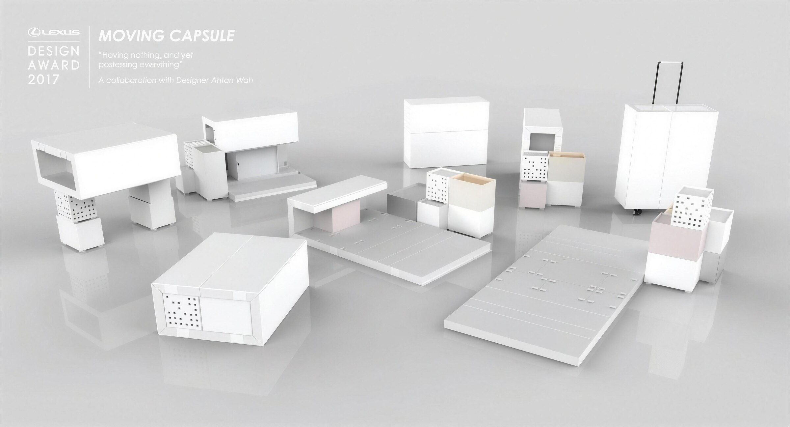

Moving Capsule
“Having nothing, and yet possessing everything.”“아무것도 갖지 않았지만, 모든 것을 가진.”

- Prototype Winnerone of four chosen from twelve finalists12명의 파이널리스트 중 4인의 프로토타입 수상자
- $30,000prototyping grant프로토타입 제작 지원금
- Neri & Humentors through the prototype프로토타입 멘토
- La TriennaleLEXUS YET, Milan Design Week, 4–9 April 2017LEXUS YET, 밀라노 디자인 위크, 2017.4.4–9
- Client
- Lexus Design Award 2017
- Location
- La Triennale di Milano
- Year
- 2017
- Role
- Designer
- Mentor
- Neri & Hu
- Jury
- Paola Antonelli, Toyo Ito and others
- Scope
- Concept, prototype design and fabrication
The brief. The 2017 theme was “Yet”: bringing together things that seem to pull against each other. Mine was the oldest contradiction of all: to own nothing, and yet have everything you need.
The question. What do objects actually mean in our lives? For people whose homes are temporary by circumstance rather than choice, or who have lost everything, or who simply want less, a home has to be something you can carry.
The idea. A modular capsule that holds your basic needs and unpacks into a small living environment: low tables, a bed platform, stacking storage and a wheeled case. Like a smartphone, each piece does more than one job, so wherever it is unpacked becomes home.
What I did. Concept, design and fabrication of the full-scale prototype with the mentorship of Neri & Hu, shown among the twelve finalists in the LEXUS YET exhibition at La Triennale di Milano during Milan Design Week 2017.
과제. 2017년의 테마는 “Yet”, 서로 어긋나 보이는 것들을 하나로 묶는 것. 제가 고른 건 가장 오래된 모순이었습니다. 아무것도 갖지 않았지만, 필요한 모든 것을 가진.
질문. 물건은 우리 삶에서 어떤 의미일까. 선택이 아닌 상황 때문에 집이 임시적인 사람, 모든 것을 잃은 사람, 혹은 덜 갖고 싶은 사람에게 집은 들고 다닐 수 있는 것이어야 했습니다.
아이디어. 기본적인 필요를 담고, 펼치면 작은 생활 공간이 되는 모듈형 캡슐. 낮은 테이블, 침대 플랫폼, 쌓이는 수납, 바퀴 달린 케이스. 스마트폰처럼 하나가 여러 역할을 해서, 펼치는 곳이 곧 집이 됩니다.
역할. 컨셉, 디자인, 실물 크기 프로토타입 제작. Neri & Hu의 멘토링을 받아 완성했고, 2017 밀라노 디자인 위크 기간 트리엔날레 디 밀라노의 LEXUS YET 전시에서 12인의 파이널리스트와 함께 전시되었습니다.
Film영상
Pack, unpack, live접고, 펼치고, 살다
The capsule rolls in closed, opens into a bed, a desk and storage for one, then packs back into a single wheeled case.닫힌 채 굴러 들어온 캡슐이 침대, 책상, 수납이 있는 1인의 방으로 펼쳐지고, 다시 바퀴 달린 케이스 하나로 접힙니다.
Prototype프로토타입
Unpacked, a home펼치면, 집
The full-scale prototype, unpacked into a room for one: sleep, read, store and set out what you carry.실물 크기 프로토타입을 펼친 1인의 방. 자고, 읽고, 수납하고, 가진 것을 펼쳐 놓는.